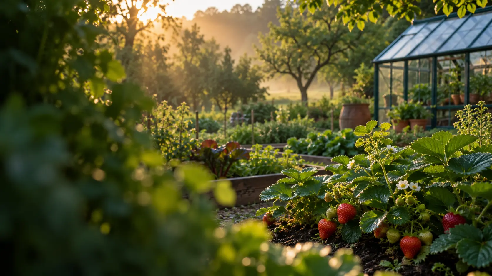

Установите
приложение
Скачайте APK на Android и откройте файл из загрузок.

Приложение для тех, кто любит выращивать
Ваш сад заслуживает внимания.
Сроки ухода, помощь по фото и история растений —
всё в одном приложении.
Тестовая версия 0.7.0 · Android 5.0+ · ARM64
Ваш опыт. Новые возможности.
Дачный опыт, забота и терпение остаются главным. «Агроном рядом» помогает вовремя вспомнить о делах, разобраться в проблеме и сохранить свои наблюдения.
Знакомьтесь с приложением
Четыре повседневные задачи.
Один помощник в вашем телефоне.
ВАШ ПЛАН НА СЕЗОН
Ближайшие дела
Нажмите на дело, чтобы отметить его в примере.
Везде, где что-то растёт
Шесть соток, теплица или подоконник.
Начните с того, что любите.
Знания, которые рядом
Откройте справочник даже там, где не ловит сеть. Для прогноза погоды и анализа фотографий потребуется интернет.
Забрать помощника с собойкарточка проблем
и ухода
операций ухода
в базе приложения
комнатных растения
в справочнике
Состав базы версии 0.7.0. Материалы продолжают проверяться и дополняться. Рекомендации справочные; результат анализа фото нужно сверять с признаками и условиями выращивания.
Начать проще, чем кажется
Несколько минут на знакомство —
и можно переходить к растениям.
Скачайте APK на Android и откройте файл из загрузок.
Выберите город и настройте сроки заморозков под ваш участок.
Откройте календарь ухода и начните вести историю сада.
Ваш помощник уже рядом
Пусть в вашем саду будет место открытиям.
А в телефоне — помощнику, который всегда под рукой.
Тестовая 0.7.0 · сборка 15 · Android 5.0+ · ARM64
Календарь, справочник, дневник и помощь по фото — в одном приложении.
Только Android с 64-битной системой ARM64. Для iPhone и 32-битной Android-системы файл не подходит.
BASNIN ECOGENESIS · НОВОЕ НАПРАВЛЕНИЕ
В разработке · Android
Забота о птице — от первой закладки яиц до выращивания молодняка.
Готовим отдельное приложение для домашнего птицеводства. Первый модуль посвящён перепелам: календарь инкубации, учёт партий, напоминания, журнал вывода и практические материалы по брудеру и клеткам.
Приложение проходит разработку и тестирование. Дата выхода и ссылка на скачивание появятся после публикации официального релиза.
Полезно знать
Самое важное перед первым знакомством с приложением.
Начните с растений, которые уже выращиваете. Календарь поможет ориентироваться в сезонных делах, справочник — разобраться в признаках проблем, а дневник — сохранить свои наблюдения.
Основные справочные материалы включены в приложение. Для получения свежего прогноза, поиска места, расчёта по архиву погоды и анализа фотографии нужна сеть.
Фотография помогает предположить причину, но не всегда даёт однозначный ответ. Сравнивайте результат с признаками и условиями выращивания. Перед применением препаратов проверяйте культуру, дозировку и сроки ожидания по инструкции к конкретному средству.
Приложение использует нейросеть через Yandex Cloud: фотография передаётся на обработку. Выбирайте фотографии растений без личных документов и посторонней частной информации.
Откройте новую APK поверх установленной версии. Android допускает обновление, если совпадают пакет и подпись, а код версии подходит. Если установка не проходит, не удаляйте прежнее приложение ради обновления: удаление может стереть локальные записи.
На сайте доступна Android-версия в формате APK. Установить этот файл на iPhone нельзя. Версия для iOS здесь пока не представлена.